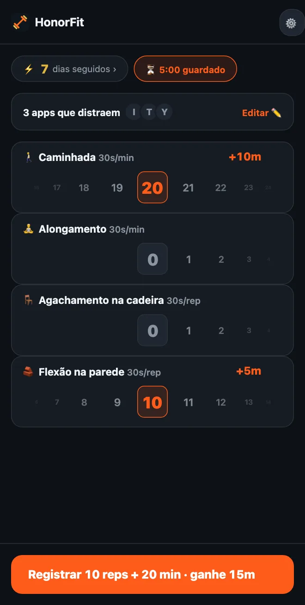

Não consegue fazer flexão? Exercícios de baixo impacto para desbloquear seus apps
Oi, gente! O HonorFit é mais conhecido como um bloqueador de apps com flexões (em inglês): seus apps ficam bloqueados até você fazer umas reps e registrar você mesmo. Mas se o seu punho, ombro ou joelho não curte muito, ou você passa o dia inteiro sentado numa mesa, ou flexão simplesmente não está rolando agora, tudo bem.
Para mim, a flexão nunca foi o ponto principal. O ponto é ter um pequeno obstáculo entre você e a rolagem infinita, um que ainda por cima faz bem. Uma volta no quarteirão faz isso tão bem quanto. Aqui vai como configurar o HonorFit com coisas que você consegue fazer de verdade.
Comece com os que já vêm no app
Logo de cara você tem quatro exercícios: flexões, abdominais, barra fixa e agachamentos. Desses, os agachamentos são os mais leves, e cada um vale 30 segundos.
E como é no sistema de honra, ninguém está conferindo como é o seu agachamento. Se um agachamento completo é demais, levantar da cadeira e sentar de novo conta. A mesma ideia vale para flexão na parede ou na bancada da cozinha. Você decide o que é uma rep, e só registra com honestidade.
Escolha os seus (grátis até 3)
A partir da versão 1.15.0, você pode renomear e remover exercícios, definir quanto cada um vale e adicionar até 3 seus, tudo de graça. O Pro (US$ 3 por mês ou US$ 19,99 em pagamento único nos EUA; o preço varia conforme o país e a moeda, e a loja mostra o seu) deixa você adicionar quantos quiser. Você chega lá pela engrenagem na tela inicial e depois pelo card Exercícios. Escrevi cada passo do editor aqui. Estas são as coisas que eu olharia.
Treinos por tempo (registrados em minutos)
Mude qualquer exercício para Minutos, ou toque numa das sugestões com ⏱. As que combinam aqui:
- 🚶 Caminhada. Minha favorita para isso. Provavelmente a vitória mais fácil que existe.
- 🧘 Ioga ou 🤸 Pilates, ou adicione um chamado Alongamento se for mais o que você faz. (Tem mais sobre isso na página do bloqueador de apps com ioga.)
- 🏊 Natação e 🚴 Ciclismo, os dois leves para as articulações.
- 🪷 Meditar. Não é exercício, mas está lá, e dez minutos de silêncio são uma ótima troca por dez minutos de TikTok.
Treinos por tempo começam em 30 segundos de apps por minuto, então uma caminhada de 20 minutos vale 10 minutos. A roda conta minutos inteiros, até 100 de uma vez.
Movimentos para fazer na mesa (registrados em reps)
Toque em ＋ Adicionar exercício e digite um nome. Alguns que funcionam no escritório ou num apartamento pequeno, sem equipamento:
- Agachamento na cadeira (sentar e levantar): levante da cadeira e sente de novo.
- Flexão na parede ou flexão na mesa: flexões apoiado numa parede ou numa mesa firme. Quanto mais alta a superfície, mais fácil.
- Elevação de panturrilha: suba na ponta dos pés e desça. Dá para fazer esperando o micro-ondas.
- Marcha parada: a sugestão Joelho alto, só que mais devagar. Renomeie se quiser.
- Ponte de glúteos e Kegel: silenciosos, sem equipamento, e dá para fazer Kegel numa reunião sem ninguém saber. Escrevi um post inteiro sobre eles.
Isometria (prancha, cadeirinha)
Como a roda de minutos conta minutos inteiros, uma prancha de 20 segundos não se encaixa bem ali. Eu deixaria os isométricos em Reps e decidiria o que uma rep significa, tipo “segurar 20 segundos”. Prancha e Cadeirinha estão nas sugestões.
Quanto cada um deveria valer?
Exercícios novos começam em 30 segundos por rep. Dá para subir ou descer de 5 em 5 segundos. Alguns pontos de partida:
| Exercício | Conta | Vale | Por exemplo |
|---|---|---|---|
| 🚶 Caminhada | Minutos | 30s por minuto | caminhada de 20 minutos = 10 min |
| 🧘 Alongamento | Minutos | 30s por minuto | 10 minutos = 5 min |
| 🪑 Agachamento na cadeira | Reps | 30s por rep | 10 = 5 min |
| 🧱 Flexão na parede | Reps | 30s por rep | 10 = 5 min |
| Elevação de panturrilha | Reps | 10–15s por rep | 20 a 15s = 5 min |
| Prancha | Reps (1 rep = segurar 20s) | 1 min por rep | 3 vezes = 3 min |
Isso é só o meu chute do que parece justo. O número certo é aquele que você vai pagar de verdade, em vez de dar um jeitinho. Se caminhar é o hábito que você mais quer criar, faça valer mais, tipo 1 minuto por minuto.

Algumas configurações para copiar
- Dia de escritório: Agachamento na cadeira, Flexão na parede, Elevação de panturrilha, Caminhada.
- Leve: Caminhada, Alongamento, Agachamento na cadeira, Flexão na parede (é a captura de tela acima).
- Calmo: Caminhada, Ioga, Meditar.
- Apartamento silencioso: Ponte de glúteos, Kegel, Agachamento na cadeira, Caminhada.
Eu ficaria em três ou quatro, já que cada um ganha sua própria roda na tela inicial. Na versão grátis, você chega a quatro renomeando os padrão (Agachamentos para Agachamento na cadeira, Flexões para Flexão na parede) e adicionando o resto como seus 3 personalizados.
E se você está lidando com uma lesão, dor ou algum problema de saúde, converse com seu médico ou com um fisioterapeuta sobre o que é seguro para você. Eu faço um bloqueador de apps; não sou a pessoa certa para perguntar sobre o seu joelho, kkk.
HonorFit Blocker é um bloqueador de apps grátis para iPhone e Android. Sistema de honra, sem câmera, nada sai do seu celular. Treinos por tempo e até 3 exercícios personalizados são grátis; o Pro libera sem limite. Não é para todo mundo, mas quem sabe alguns de vocês curtem!